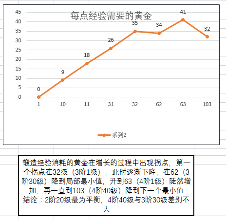

6 锻造材料的培育
百炼为战最难回答的问题中，“怎么锻造最划算？”可谓首屈一指。因为游戏本身的说明不多，锻造又会损失机器人，所以玩家往往担心自己锻造的方式不对，或影响主力成长，或影响其他进度。
在做狗粮的时候，不同星等/阶/级的机器人，被喂掉时得到的经验值也是不同的。怎么锻造比较好？一般问这样的问题，我们可以理解为“用几星机器人当材料卡比较节省材料”。材料又分黄金、矿和火种，在此我们假定火种是不用操心的（因为火种都没有富余的时候，升级已经够你操心的，也不会考虑锻造），那么重点看怎么锻造省黄金，也就是黄金/经验（每获得一点锻造经验需要多少黄金）怎样最小化3。
6.2 狗粮阶/级的影响
以上比较的是星等，现在说说阶和级，也就是狗粮升到多少比较好？升到高级别，黄金的开销越来越大，但是给的锻造经验也越来越多。三星在一阶10级的时候黄金/经验=9，到了二阶1级就成了黄金/经验=18。为什么开销更高？因为一阶升二阶需要大量的黄金！同理，二阶升三阶，黄金/经验从26变成35，三阶升四阶从34变成了41，等级上去了，升阶那一下的黄金开销就拉高了平均经验价格。
所以这里把黄金/经验比做竖轴，把级别做横轴画了一张图：

所以，如果材料卡富裕，还是不要升太高阶，早点吃掉比较省黄金（三星三阶30级，四星四阶40级），升阶后就一定要升满级，不然特亏。但如果手头材料卡比较拮据，自然还是到最高再吃。注意有一种论断：材料卡在手上捂的时间越长，他们在竞技场战斗中也能给你赚回一些黄金。
一星和二星基本上不用考虑升级，因为在黄金开销方面区别并不大，升满也产生不了多少锻造经验，不用浪费时间在升级界面，要么直接吃，要么留着刷竞技场。
6.3 狗粮招牌的影响
接下的是招牌等级对锻造经验的影响，这个值只跟星等和机器人还是饿鲨有关，如下表
| 二星 | 三星 | 四星 | |
|---|---|---|---|
| 普通机器人 | 31 | 220 | 1100 |
| 饿鲨 | 62 | 440 | 2200 |
所以，当你的狗粮要被光荣地吃掉前，记得把能用的招牌升级程序都砸进去。
另外要注意：招牌经验和升级经验是两个完全独立的数字，互不影响，具体参见招牌的价值。
6.4 招牌多少级再喂？
这个问题问的人很多。
有一些人不是很着急锻造，于是就慢慢地等着狗粮的招牌达到100再喂。这种选择无可厚非，但是容易给另一些不太明白的人传递一种信息，仿佛“没有觉醒到100之前喂就亏了”。事实上当然不是这样，因为上一节讲到，招牌的经验是恒定的，并且也不享受同属性与同人物的加成。换句话说，一个招牌程序喂给爆破鲨还是侦查鲨，得到的经验都是一样。
那是不是说根本不用等高觉醒，狗粮到手都不用觉醒就吃了算了？也不是，因为狗粮不是天天有，尤其是性价比高的四星机器人和四星饿鲨。所以我的建议是：
- 在游戏后期锻造的目标是五星机器人的时候，二星三星普通机器人就不用特别管了，开高等或者三星水晶慢慢自然觉醒，二星三星招牌留着养饿鲨。
- 着急要集中锻造某个机器人的时候，招牌不用拘泥于机器人类别。例如你想锻造五星警车，却没有四星侦查饿鲨，反倒是四星斗士饿鲨已经觉醒到80多，手上还有20个任意四星招牌程序。这时就可以把斗士饿鲨升到100觉醒吃掉，不用等侦查饿鲨，因为这20个招牌产生的经验是一样的。
6.5 狗粮自身要不要接受锻造
很多人总这个问题，其实要分两种情况来看。单纯做狗粮的卡肯定不要接受锻造，因为这相当于是嵌套着锻造，会有一定的锻造亏损。但如果不是纯狗粮呢？在游戏初期你入手了一个四星战擎，严格来说他早晚是五星机器人的狗粮，但考虑到这个游戏初期很肝，可能在比较长的时间内，四星战擎都是你的主力，你能为了那一点点经验的亏损不锻造他？
当然，如果较真的话，材料卡到手直接吃掉，黄金/经验就等于0了，岂不是最小化？但是也许一星两星还有人这么做，三星偶尔可以这么弄，四星就没有谁会这么豪迈了。↩︎